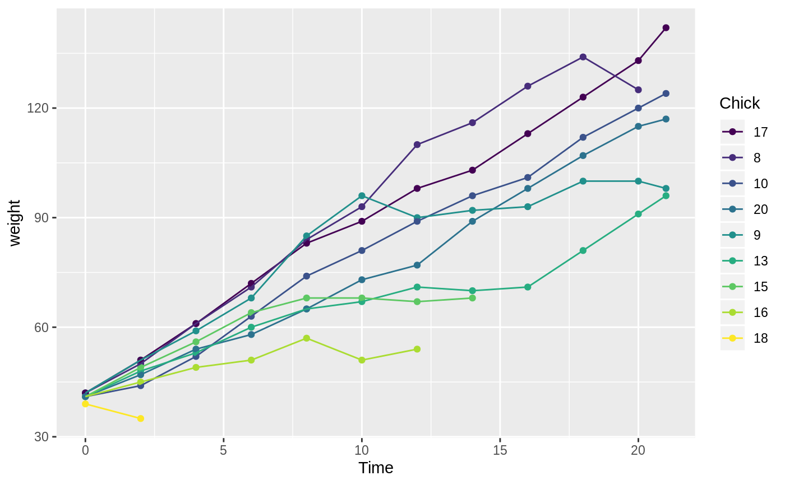

fct_reorder() is useful for 1d displays where the factor is mapped to
position; fct_reorder2() for 2d displays where the factor is mapped to
a non-position aesthetic. last2() is a helper for fct_reorder2();
it finds the last value of y when sorted by x.
fct_reorder(.f, .x, .fun = median, ..., .desc = FALSE) fct_reorder2(.f, .x, .y, .fun = last2, ..., .desc = TRUE) last2(.x, .y)
| .f | A factor (or character vector). |
|---|---|
| .x, .y | The levels of |
| .fun | n summary function. It should take one vector for
|
| ... | Other arguments passed on to |
| .desc | Order in descending order? Note the default is different
between |
chks <- subset(ChickWeight, as.integer(Chick) < 10) chks <- transform(chks, Chick = fct_shuffle(Chick)) if (require("ggplot2")) { ggplot(chks, aes(Time, weight, colour = Chick)) + geom_point() + geom_line() # Note that lines match order in legend ggplot(chks, aes(Time, weight, colour = fct_reorder2(Chick, Time, weight))) + geom_point() + geom_line() + labs(colour = "Chick") }#>